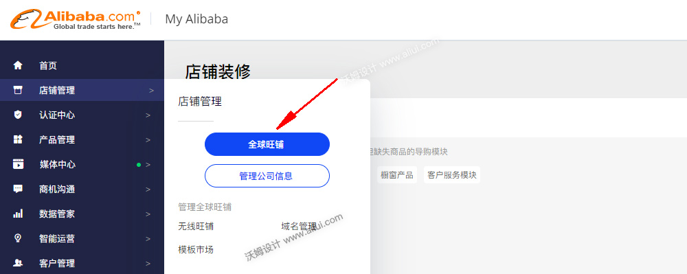

第一步:
登录Myalibaba后台中心， ->店铺管理 -> 全球旺铺，如下图所示；或点此直接跳转链接
第二步:应用PC端模板
右上角如图所示 点击 “我的模板” 在模板管理中可以看到订购下单的模板，点击确认，命名（比如命名：PC端新装修）模板应用PC端。开始装修PC端模板。
重要:第三步:
应用无线端模板,选择复制的页面，选择已经设置PC端的页面。命名新的页面。新页面里包含了PC端和无线端，装修无线端完成之后发布。
提示
装修PC端和无线端要在同一个页面里装修，否则发布无法同时生效。如下图所示 按钮切图检查是否安装成功。